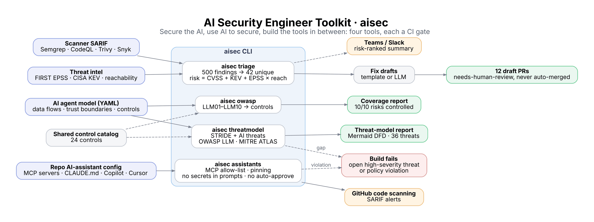

Shift left, stay right, and automate everything in between. One command-line tool with four tools for the security engineer's job in the AI era: secure the AI, use AI to secure, and build the tools in between.

The security engineer's job now spans eight areas, and AI shows up in every one of them. This toolkit covers the parts that are hardest to do by hand and easiest to automate.
Triage reads SARIF from any scanner and removes duplicates across tools and nightly runs. It then ranks each issue by severity, by whether the vulnerability is known to be exploited (CISA KEV), how likely exploitation is (EPSS), and whether the vulnerable code is actually reachable. For the top issues it drafts a fix and a pull request. A model may draft the fix, but every PR opens as a draft that a human must review.
Threat modeling as code describes an AI agent's data flows and trust boundaries in YAML and walks STRIDE across them, plus AI-specific threats mapped to OWASP and MITRE ATLAS. A missing control fails the build, a typo in a control is an error rather than a silent pass, and accepted risks expire. Assistant governance checks how Copilot, Claude Code, Cursor and similar tools are configured: allow-listed and pinned MCP servers, no secrets in prompt files, required exclusions, and no auto-approve modes.